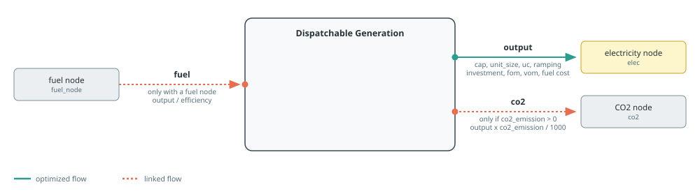
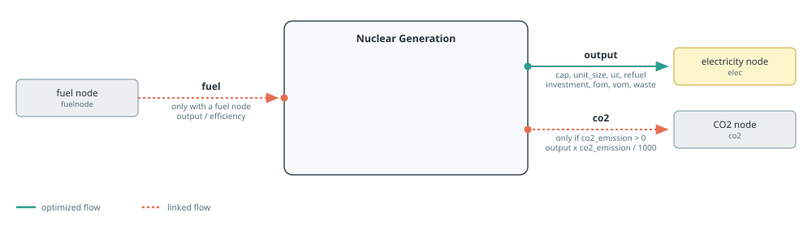
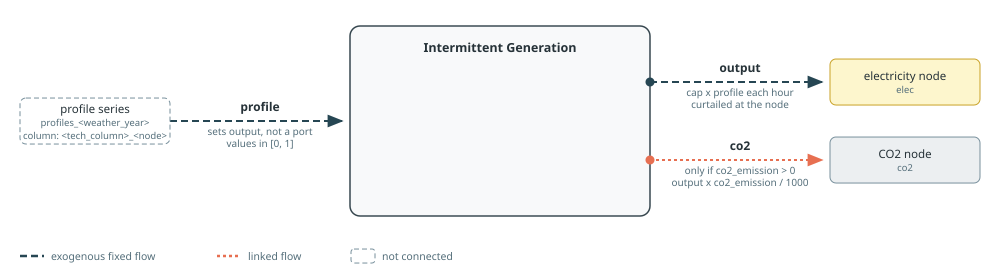
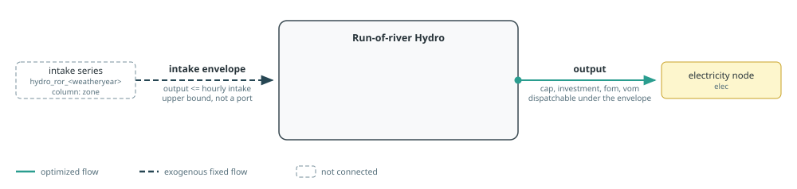

Generation
Generation builders create dispatchable, nuclear, intermittent, and hydro sources. Costed electricity sources attach annualised investment and decommissioning costs, fixed operation and maintenance, and the applicable variable costs.
See Component Builders for shared naming, workbook, capacity, and port conventions, and Tags And Post-Processing for tagging and reporting. Each section's diagram follows the conventions in Reading The Port Diagrams.
Dispatchable Generation
makedispatchable creates a source named "$cname $(elec.name)". Its principal port is electricity output, and its investment, connection, fixed O&M, decommissioning, variable O&M, and direct fuel costs are attached there.
In tech_mode=:excel, common technical and economic defaults come from the technology column named by techkey in sheet dispatchable. In tech_mode=:arguments, additive costs and emissions default to zero, linked fuel defaults to lossless efficiency, and unit sizing and ramping default to disabled. Capital lifetime and profiles are required only when their associated cost is active. A numeric cap fixes output capacity; a JuMP variable or affine expression reuses an external capacity decision; nothing creates a new decision; and an extracted snapshot inherits the matching component's capacity. mincap and maxcap bound either variable form. Numeric cap=0 builds a zero-capacity component. capacitymultiplier can impose a time-varying availability on output.
If fuelnode is absent, fuel_cost is a variable cost on electricity output. If a fuel node is supplied, the builder instead creates a fuel input equal to electricity output divided by efficiency. Non-zero co2_emission adds a linked co2 output and connects it to the CO2 node; co2price prices that flow.

Setting uc=true adds unit commitment, no-load cost, and start-up cost. Passing an extracted snapshot as uc instead replays the commitment schedule already solved for that component, and then requires a fixed cap. integeruc selects continuous or integer commitment. The minimum power, up-time, down-time, start-up duration, and shut-down duration default to rows in the same workbook column. When unit_size is positive, non-zero ramp_up and ramp_down values add ramp limits after multiplication by the unit size.
Tags: :tech => cname, :zone => elec.name, and the function tags generation and dispatchable.
See the Dispatchable Generation example for a complete model using this builder.
Posy2.makedispatchable — Function
makedispatchable(cname::String, techkey::String, elec::Node, co2::Node, s::Snapshot;
cap=nothing, mincap=nothing, maxcap=nothing, capacitymultiplier=nothing,
integeruc=false, uc=false, fuelnode=nothing,
co2price=co2_price(s),
overnight_cost, om_fixed_cost, decommissioning, lifetime,
construction_profile, decommissioning_profile, connection_cost,
om_var_cost, fuel_cost, no_load_cost, startup_cost, co2_emission,
efficiency, unit_size, ramp_up, ramp_down, min_power, min_uptime,
min_downtime, startup_duration, shutdown_duration,
)Build, connect and return a dispatchable component.
Arguments:
cname: component name prefix.techkey: technology column name in thedispatchabletech data sheet.elec: Electricity node connected to component output flow.co2: CO2 node connected only whenco2_emission != 0.s: Target snapshot where the component and behaviors are registered.cap: Output capacity in model power units. A number fixes capacity, a JuMPVariableReforAffExprreuses that expression,nothingcreates a capacity decision, and an extractedSnapshotinherits the capacity of"<cname> <node name>"in it. Numeric0builds a zero-capacity component.mincap: Lower bound on an optimized or externally supplied capacity; checked as an assertion against a fixed or inherited one.maxcap: Upper bound on an optimized or externally supplied capacity; checked as an assertion against a fixed or inherited one.capacitymultiplier: Time varying multiplier applied to output capacity (capacity basis, not energy basis).integeruc: Iftrue, UC commitment variables are integer (mixed integer UC).uc: Enables UC constraints and UC linked costs (no_load_cost,startup_cost). An extractedSnapshotinstead replays the commitment schedule already solved for the matching component, and then requires a fixedcap.fuelnode: If provided, fuel is modeled as an input flow linked by efficiency. Ifnothing, fuel is modeled as a variable cost on output energy (fuel_cost).co2price: CO2 cost coefficient used with emitted CO2 flow.overnight_cost: Overnight CAPEX input used byeac(...). Defaults to0in:argumentsmode.om_fixed_cost: Fixed O&M cost on output capacity (FixedCost(:fom, "output", ...)). Defaults to0in:argumentsmode.decommissioning: Decommissioning cost ratio used indecom_cost(...). Defaults to0in:argumentsmode.lifetime: Asset lifetime used by annualization/decommissioning calculations (> 0, integer-valued). Required whenovernight_cost != 0.construction_profile: Construction cost share profile passed toeac(...). Required whenovernight_cost != 0.decommissioning_profile: Decommissioning cost share profile passed todecom_cost(...). Required when bothovernight_costanddecommissioningare non-zero.connection_cost: Connection cost ratio applied on annualized investment. Defaults to0in:argumentsmode.om_var_cost: Variable O&M cost on output energy flow (VariableCost(:vom, "output", ...)). Defaults to0in:argumentsmode.fuel_cost: Direct fuel variable cost on output energy. Used only whenfuelnode === nothingand defaults to0in:argumentsmode.no_load_cost: UC no load cost applied per committed output state and time step. Used only whenuc=trueand defaults to0in:argumentsmode.startup_cost: UC startup cost applied to startup events. Used only whenuc=trueand defaults to0in:argumentsmode.co2_emission: CO2 emission factor linked from output energy to CO2 flow (output * co2_emission / 1000). Defaults to0in:argumentsmode.efficiency: Fuel to output conversion efficiency for linked fuel flow. Used only whenfuelnodeis provided and defaults to lossless1in:argumentsmode.unit_size: Unit block size for discrete capacity representation. In:argumentsmode,nothingdisables unit sizing. Use0to override an Excel value with no unit sizing. A positive value is required whenuc=true.ramp_up: Max ramp up as a fraction of unit capacity per hour. Passed toRamping(...)asramp_up * unit_size. Omitted ornothingadds no constraint in:argumentsmode.ramp_down: Max ramp down as a fraction of unit capacity per hour. Same scaling asramp_up. Omitted ornothingadds no constraint in:argumentsmode.min_power: UC minimum generation fraction while committed. Used only whenuc=trueand defaults to0in:argumentsmode.min_uptime: minimum consecutive online time in hours after a start. Used only whenuc=trueand defaults to0in:argumentsmode.min_downtime: minimum consecutive offline time in hours after a shutdown. Used only whenuc=trueand defaults to0in:argumentsmode.startup_duration: offline-to-online transition duration in hours. Used only whenuc=trueand defaults to0in:argumentsmode.shutdown_duration: online-to-offline transition duration in hours. Used only whenuc=trueand defaults to0in:argumentsmode.
Nuclear Generation
makenuclear uses the same dispatchable sheet and the same principal electricity, fuel, and CO2 ports. It adds waste_cost, supports integer capacity with integercap, and accepts warmstart for a capacity decision. Ramping follows makedispatchable: non-zero ramp_up and ramp_down values are multiplied by unit_size. They default to inactive in :arguments mode; in :excel mode, omitted values come from the technology column.

Fresh unit commitment may include planned refuelling outages. Refuelling is active only when refuel=true, uc=true, refuel_fraction_per_year is positive, and refuel_duration is positive. Set refuel=false to disable it without reading or validating the other refuelling arguments. When active, refuelmask must be a positive integer interval supplied by the caller. In :excel mode, refuel fraction and duration default to the dispatchable technology column. In :arguments mode they default to zero, disabling refuelling outages; refuelmask has no workbook default. Supplying refuelling arguments with uc=false emits a warning and does not add refuelling constraints. A replayed UC schedule retains the outages it was solved with; explicit refuelling arguments emit a warning and are ignored. Economic terms and emissions also default to zero in :arguments mode.
Capacity follows the common numeric, external-expression, nothing, and inherited-from-a-snapshot semantics. For an external expression, mincap and maxcap constrain that expression. Nosy does not allow warmstart with an external expression. With integercap=true, a VariableRef is made integer, whereas an AffExpr is rejected. In particular, unit_size does not make an external variable a number-of-units variable; represent that explicitly as unit_size * integer_units when unit-block integrality is required.
Refuelling constraints do not depend on techkey. They assume an 8,760-hour model horizon, so use them only for a full non-leap-year study.
Tags: :tech => cname, :zone => elec.name, and the function tags generation and dispatchable. Direct emissions are controlled by co2_emission; the builder does not infer a carbonfree tag from the technology name.
See the Nuclear example for models using this builder with forced and flexible refuelling schedules.
Posy2.makenuclear — Function
makenuclear(cname::String, techkey::String, elec::Node, co2::Node, s::Snapshot;
cap=nothing, mincap=nothing, maxcap=nothing, integercap=false, warmstart=nothing,
uc=false, integeruc=false, startupmask=nothing, shutdownmask=nothing,
refuel::Bool=true, refuel_duration::Union{Nothing,Real}=nothing,
refuelmask::Union{Nothing,Real}=nothing, refuel_fraction_per_year::Union{Nothing,Real}=nothing,
fuelnode=nothing, co2price=co2_price(s),
overnight_cost::Union{Nothing,Real}=nothing, om_fixed_cost::Union{Nothing,Real}=nothing,
decommissioning::Union{Nothing,Real}=nothing, lifetime::Union{Nothing,Real}=nothing, construction_profile=nothing, decommissioning_profile=nothing,
connection_cost::Union{Nothing,Real}=nothing, om_var_cost::Union{Nothing,Real}=nothing, fuel_cost::Union{Nothing,Real}=nothing,
waste_cost::Union{Nothing,Real}=nothing, no_load_cost::Union{Nothing,Real}=nothing, startup_cost::Union{Nothing,Real}=nothing,
co2_emission::Union{Nothing,Real}=nothing, efficiency::Union{Nothing,Real}=nothing, unit_size::Union{Nothing,Real}=nothing,
ramp_up::Union{Nothing,Real}=nothing, ramp_down::Union{Nothing,Real}=nothing,
min_power::Union{Nothing,Real}=nothing, min_uptime::Union{Nothing,Real}=nothing, min_downtime::Union{Nothing,Real}=nothing,
startup_duration::Union{Nothing,Real}=nothing, shutdown_duration::Union{Nothing,Real}=nothing,
)Build, connect and return a nuclear reactor component.
Arguments:
cname: component name prefix.techkey: technology column name in thedispatchabletech data sheet.elec: electricity node to connect the component to.co2: CO2 node connected whenco2_emissionis non zero.s: snapshot to register the component in.cap: Output capacity. A number fixes capacity, a JuMPVariableReforAffExprreuses that expression,nothingcreates a capacity decision, and an extractedSnapshotinherits the capacity of"<cname> <node name>"in it.mincap: Lower bound on an optimized or externally supplied capacity; checked as an assertion against a fixed or inherited one.maxcap: Upper bound on an optimized or externally supplied capacity; checked as an assertion against a fixed or inherited one.integercap: Integer flag for capacity expansion variable.warmstart: Warm start value passed to variable capacity behavior when used.uc: Enables UC constraints and UC linked costs. An extractedSnapshotinstead replays the commitment schedule already solved for the matching component, and then requires a fixedcap. Refuelling logic is only modeled when unit commitment is enabled; ifuc=falseand any refuelling argument is provided, a warning is emitted and refuelling is ignored.integeruc: Integer UC commitment variables.startupmask: Optional masks restricting UC startup/shutdown availability over time.shutdownmask: Optional masks restricting UC startup/shutdown availability over time.refuel: Enables planned refuelling constraints. Set tofalseto disable refuelling regardless of the other refuelling arguments.refuel_duration: Duration of planned refuelling outage. Ifnothing, read from the technology workbook. Must be >= 0; refuelling constraints are enabled only when this value is > 0.refuelmask: Interval between allowed refuelling windows. Non-default parameter (not read from the technology workbook). When refuelling is enabled, it must be provided, strictly positive, and integer-valued.refuel_fraction_per_year: Minimum yearly refuelling requirement (fraction per unit per year). Ifnothing, read from the technology workbook. Must be >= 0; refuelling constraints are enabled only when this value is > 0.fuelnode: If provided, fuel is represented as linked input flow usingefficiency. Ifnothing,fuel_costis applied as output variable cost.co2price: CO2 price coefficient for emitted CO2 flow.overnight_cost: Cost/lifetime inputs for annualized CAPEX, FOM, and decommissioning terms. Workbook defaults are used when values arenothing.om_fixed_cost: Cost/lifetime inputs for annualized CAPEX, FOM, and decommissioning terms. Workbook defaults are used when values arenothing.decommissioning: Cost/lifetime inputs for annualized CAPEX, FOM, and decommissioning terms. Workbook defaults are used when values arenothing.lifetime: Cost/lifetime inputs for annualized CAPEX, FOM, and decommissioning terms (> 0, integer-valued). Workbook defaults are used when values arenothing.construction_profile: Cost/lifetime inputs for annualized CAPEX, FOM, and decommissioning terms. Workbook defaults are used when values arenothing.decommissioning_profile: Decommissioning cost share profile passed todecom_cost(...). Workbook defaults are used when values arenothing.connection_cost: Ratio applied to annualized investment for connection cost.om_var_cost: Variable cost coefficients on output energy (fuel cost used directly only whenfuelnode === nothing).fuel_cost: Variable cost coefficients on output energy (fuel cost used directly only whenfuelnode === nothing).waste_cost: Variable cost coefficients on output energy (fuel cost used directly only whenfuelnode === nothing).no_load_cost: UC specific costs added only whenuc=true.startup_cost: UC specific costs added only whenuc=true.co2_emission: Emission factor linking output energy to CO2 output flow.efficiency: Fuel to output efficiency for linked fuel input mode.unit_size: Unit block size for discrete capacity representation.ramp_up: Max ramp up as a fraction of unit capacity per hour. Passed toRamping(...)asramp_up * unit_size. Omitted ornothingadds no constraint in:argumentsmode.ramp_down: Max ramp down as a fraction of unit capacity per hour. Same scaling asramp_up. Omitted ornothingadds no constraint in:argumentsmode.min_power: UC minimum generation fraction while committed. Used only whenuc=true.min_uptime: minimum consecutive online time in hours after a start. Used only whenuc=true.min_downtime: minimum consecutive offline time in hours after a shutdown. Used only whenuc=true.startup_duration: offline-to-online transition duration in hours. Used only whenuc=true.shutdown_duration: online-to-offline transition duration in hours. Used only whenuc=true.
Intermittent Generation
makeintermittentsource creates a profile source. It reads availability from sheet profiles_<weatheryear>, column <techkey>_<electricity-node-name>. The profile multiplies the output capacity. Workbook lookup requires an explicit weatheryear; the keyword defaults to nothing and is unused when profile is supplied directly.

Numeric cap fixes capacity; a JuMP variable or affine expression reuses an external capacity decision; nothing creates a new decision; and a solved snapshot inherits the named component's capacity. mincap and maxcap bound either variable form. In :excel mode, technical and cost defaults come from the technology column named by techkey in sheet intermittent. In :arguments mode, costs and emissions default to zero and inactive capital data are not required. The production profile remains structural whenever capacity is active. Non-zero emissions create the same linked CO2 flow as for dispatchable generation.
Tags: :tech => cname, :zone => elec.name, and the function tags generation and intermittent. The component also receives the function tag carbonfree when co2_emission is zero.
See the Dispatchable Generation example for a model that co-optimises intermittent and dispatchable capacity.
Posy2.makeintermittentsource — Function
makeintermittentsource(cname::String, techkey::String, elec::Node, co2::Node, s::Snapshot;
cap=nothing, mincap=nothing, maxcap=nothing,
weatheryear=nothing, profile=nothing,
co2price=co2_price(s),
overnight_cost::Union{Nothing,Real}=nothing, om_fixed_cost::Union{Nothing,Real}=nothing,
decommissioning::Union{Nothing,Real}=nothing, lifetime::Union{Nothing,Real}=nothing, construction_profile=nothing, decommissioning_profile=nothing,
connection_cost::Union{Nothing,Real}=nothing, om_var_cost::Union{Nothing,Real}=nothing,
fuel_cost::Union{Nothing,Real}=nothing, co2_emission::Union{Nothing,Real}=nothing,
)Build, connect and return an intermittent source component.
Arguments:
cname: component name prefix.techkey: technology column name in theintermittenttech data sheet.elec: electricity node to connect the component to.co2: CO2 node connected whenco2_emissionis non zero.s: snapshot to register the component in.cap: Output capacity. A number fixes capacity, a JuMPVariableReforAffExprreuses that expression,nothingcreates a capacity decision, and an extractedSnapshotinherits the capacity of"<cname> <node name>"in it.mincap: Lower bound on an optimized or externally supplied capacity; checked as an assertion against a fixed or inherited one.maxcap: Upper bound on an optimized or externally supplied capacity; checked as an assertion against a fixed or inherited one.weatheryear: Year suffix used to select profile seriesprofiles_<year>. Required for workbook lookup; unused whenprofileis supplied explicitly.profile: Hourly capacity-factor vector or scalar, each value in[0, 1]. Ifnothing, read the<techkey>_<node>workbook column.co2price: CO2 cost coefficient applied to emitted CO2 flow.overnight_cost: CAPEX/FOM/lifetime inputs used in annualized fixed cost terms. Workbook defaults are used when values arenothing.om_fixed_cost: CAPEX/FOM/lifetime inputs used in annualized fixed cost terms. Workbook defaults are used when values arenothing.decommissioning: CAPEX/FOM/lifetime inputs used in annualized fixed cost terms. Workbook defaults are used when values arenothing.lifetime: CAPEX/FOM/lifetime inputs used in annualized fixed cost terms (> 0, integer-valued). Workbook defaults are used when values arenothing.construction_profile: CAPEX/FOM/lifetime inputs used in annualized fixed cost terms. Workbook defaults are used when values arenothing.decommissioning_profile: Decommissioning cost share profile passed todecom_cost(...). Workbook defaults are used when values arenothing.connection_cost: Ratio applied to annualized investment as connection fixed cost.om_var_cost: Variable O&M coefficient on output energy flow.fuel_cost: Fuel variable cost coefficient on output energy flow.co2_emission: Emission factor linking output energy to CO2 output flow.
Run-of-river Hydro
makehydroror reads an intake shape from sheet hydro_ror_<weatheryear>, column <zone>. The builder normalizes the shape to sum to one, distributes intake over it, and limits hourly output by both that intake envelope and installed capacity. Workbook lookup requires an explicit weatheryear; the keyword defaults to nothing and is unused when intake_profile is supplied directly.

In :excel mode, cost defaults come from the technology column named by techkey in sheet intermittent; the default column name is Hydro ror. In :arguments mode costs default to zero and inactive capital data are not required. A numeric cap fixes output capacity; cap=nothing creates a new capacity decision; and a JuMP variable or affine expression reuses an external decision. mincap and maxcap bound either variable form. The intake profile remains independent of capacity.
Tags: :tech => cname, :zone => elec.name, and the function tags generation, intermittent, and carbonfree.
Posy2.makehydroror — Function
makehydroror(cname::String, zone::String, elec::Node, s::Snapshot;
cap=nothing, mincap=nothing, maxcap=nothing,
techkey::String="Hydro ror", weatheryear=nothing,
intake, intake_profile=nothing,
overnight_cost::Union{Nothing,Real}=nothing, om_fixed_cost::Union{Nothing,Real}=nothing, om_var_cost::Union{Nothing,Real}=nothing,
decommissioning::Union{Nothing,Real}=nothing, lifetime::Union{Nothing,Real}=nothing, construction_profile=nothing, decommissioning_profile=nothing,
)Build, connect and return a run of river hydro component.
Arguments:
cname: component name prefix.zone: Time series zone used to read the hydro intake profile.elec: electricity node to connect the component to.s: snapshot to register the component in.cap: Output capacity. A number fixes capacity,nothingcreates a new capacity decision, a JuMP variable or affine expression reuses that external decision, and an extractedSnapshotinherits the capacity of"<cname> <node name>"in it.mincap: Lower bound on an optimized or externally supplied capacity; checked as an assertion against a fixed or inherited one.maxcap: Upper bound on an optimized or externally supplied capacity; checked as an assertion against a fixed or inherited one.techkey: technology column name in theintermittenttech data sheet.weatheryear: Year suffix used to select intake serieshydro_ror_<year>. Required for workbook lookup; unused whenintake_profileis supplied explicitly.intake_profile: Hourly run-of-river intake shape or scalar, nonnegative with a strictly positive sum. The profile is normalized to sum to one before the total intake is applied. Ifnothing, readzonefrom the selected workbook sheet.intake: Total intake distributed over the normalized intake profile.overnight_cost: Cost/lifetime overrides for fixed and variable hydro cost terms. Workbook defaults are used when values arenothing.om_fixed_cost: Cost/lifetime overrides for fixed and variable hydro cost terms. Workbook defaults are used when values arenothing.om_var_cost: Cost/lifetime overrides for fixed and variable hydro cost terms. Workbook defaults are used when values arenothing.decommissioning: Cost/lifetime overrides for fixed and variable hydro cost terms. Workbook defaults are used when values arenothing.lifetime: Cost/lifetime overrides for fixed and variable hydro cost terms (> 0, integer-valued). Workbook defaults are used when values arenothing.construction_profile: Cost/lifetime overrides for fixed and variable hydro cost terms. Workbook defaults are used when values arenothing.decommissioning_profile: Decommissioning cost share profile passed todecom_cost(...). Workbook defaults are used when values arenothing.
Note On Capacity And Unit Commitment
unit_size is the output of one physical unit. Unit commitment uses it to express commitment, startup, and shutdown in numbers of units, so every enabled UC formulation requires a positive unit_size. A fixed capacity used with integeruc=true must be an integer multiple of unit_size.
The uc and integeruc combinations have these effects:
| Arguments | Formulation |
|---|---|
uc=false | No UC equations or UC costs; integeruc and UC operating arguments have no effect |
uc=true, integeruc=false | Fresh UC equations with continuous, relaxed commitment variables |
uc=true, integeruc=true | Fresh UC equations with integer commitment, startup, and shutdown variables |
uc=<extracted snapshot> | Replays the solved commitment schedule and requires cap to be fixed by a number or snapshot |
integercap is supported by makenuclear. With cap=nothing, a positive unit_size makes the new capacity decision a number of units and integercap=true makes that count integer. With an external VariableRef, the supplied variable itself is made integer; unit_size does not reinterpret or scale it. An external AffExpr cannot be made integer and is rejected. To share unit-block capacity, create an integer unit-count variable and pass unit_size * integer_units explicitly. Fixed and inherited capacities contain no capacity decision, so integercap and warmstart have no effect on them. warmstart applies only to a new capacity decision and is rejected for an external expression.
integercap and integeruc are independent. If both are enabled for a new nuclear capacity with fresh UC, both the capacity unit count and the hourly UC variables are integer; Posy2 does not drop either integrality condition as a simplification.
For fresh uc=true, min_power, min_uptime, min_downtime, startup_duration, and shutdown_duration configure the UC equations. Nuclear startupmask and shutdownmask also apply only to fresh UC. A replayed schedule already contains those choices, so these operating arguments and integeruc do not alter it. no_load_cost and startup_cost are attached whenever UC is enabled, including replayed UC. For makedispatchable and makenuclear, ramping is separate from UC: non-zero ramp_up or ramp_down adds a limit whenever unit_size is positive, even with uc=false. After workbook defaults and explicit overrides are resolved, zero or nothing omits that limit.